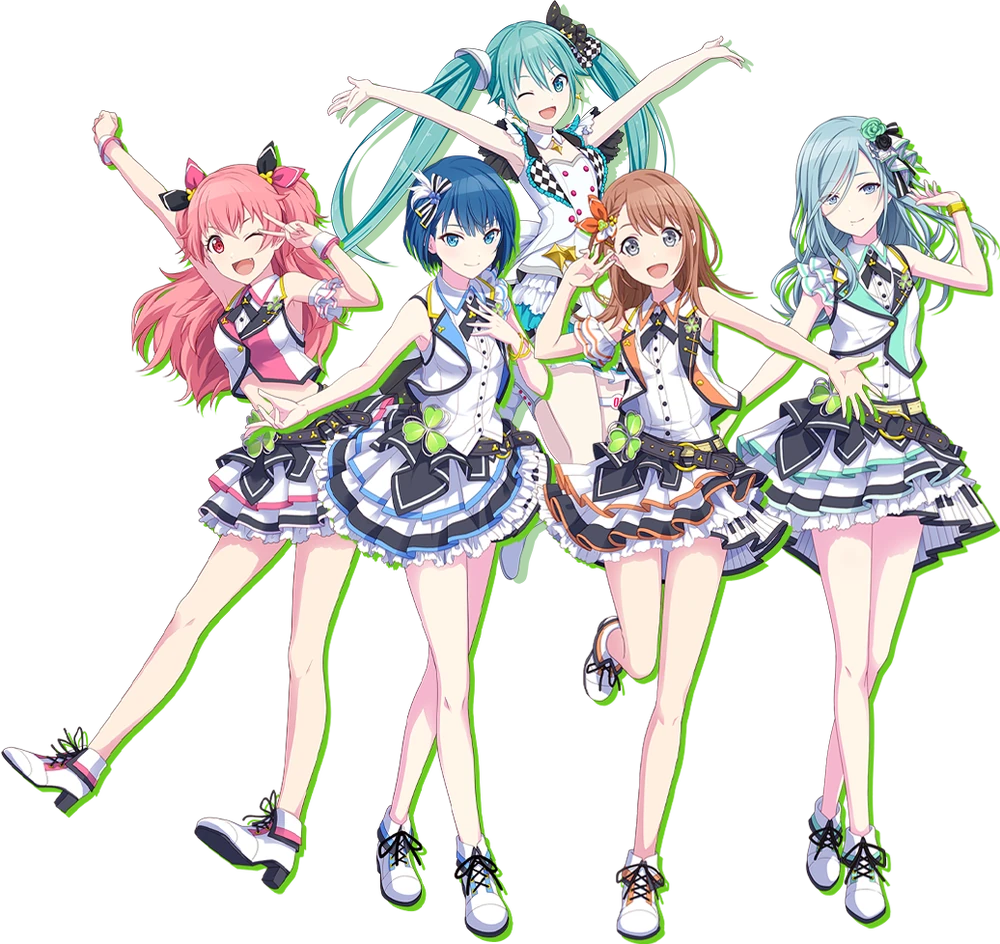

Who is MORE MORE JUMP!:
MORE MORE JUMP!, often abbreviated to MMJ and Momojan (モモジャン), is an all-female idol group
consisting of three once-retired idols and a passionate girl aiming to be an idol.
The members are Hanasato Minori, Kiritani Haruka, Momoi Airi, Hinomori Shizuku
They are one of the units in the rhythm game, HATSUNE MIKU: COLORFUL STAGE!
Members:

At the back: Hatsune Miku(frequent guest)
From left to right: Momoi Airi, Kiritani Haruka, Hanasato Minori, Hinomori Shizuku
Group name and logo origins:
The group's name came about from Minori's habit of saying "more, more",
while "Jump" symbolizes the feeling that everyone is trying to reach for their dream of becoming an idol.
Their logo is a 3 leaf clover. It represents how the members don't feel worthy to be called a fully fledged idol yet,
due to their past experiences and mistakes haunting them. However, despite their setbacks, they never gave up hope on
working their way to become better idols to inspire and give hope to others. The connections they formed, past experiences
and mistakes made, positive support and encouragement they provided to one another, as well as from their fans, makes
their idol journey worthwhile if it means being able to give hope to someone.
Goals and Dreams:
They are a freelance idol group that does livestreams to be closer with their fans. They like to interact with their fans
and even hear their suggestions for the next stream or event or outfit.
Their goal is to spread and inspire hope to as many people as they can.
After their first solo show, consisting of 700 seats, and hearing how much their fans wish that more people know
about their group, they set their sights to be famous enough to host more shows/events, go on tours and even perform at the Dome,
which holds up to 30,000 people.
They have expanded their activities to major media such as television to increase their publicity, in hopes of achieving
their dream one day.